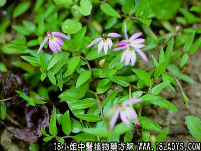

半边莲(中药材植物名:蛇脷草)(植物科目:山梗菜科)

古籍名：半边莲《本草纲目》。
别名：蛇脷草。
植物名：半边莲。
生长环境：本品为多年生柔弱草本。为一常见的野草。生于田基、落旁或浅水沟或潮湿的旷地上。
分布：本省水稻栽培区处处可见。长江以南各省亦有。
入药部分：全草。
采集期：全年有产，春夏最盛。
自采地点：家种及野生山坑边。
性味：性平、味淡。
功能：解疮毒、利水。
主治、用量和用法：1、蛇咬伤：生用，和片糖捣烂敷伤口；2、百足（蜈蚣）咬伤：生用，和片糖捣烂敷伤口；2、白浊：生用1至2两或干用5钱至1两，清水煎服。
验方：（治蛇咬伤方）半边莲、七星剑、寮刁竹、蛇王草，各5钱、清水三碗半，煎成一碗，冲酒，热服。
（方解）广州谚云：“身有半边莲，不怕共蛇眠。”可知半边莲对蛇咬伤有一定作用。七星剑消肿解毒，寮刁竹、蛇王草搜风通窍，加酒冲服，药力更速。
（方歌）半边莲蛇咬伤，清肿解毒力最长，七星刁竹蛇王草，加酒冲服力更强。
参考资料：《本草纲目》半边莲为清凉解毒药，治毒虫蛇伤，并用于痈疽疔疮、烫火伤，有利尿解毒作用，对各种化脓病、发热、烦闷、血中毒有急救解毒之功。
《广东省中医验方交流汇编》公开治疗毒蛇特效方：半边莲（火用半枝莲）、过沟龙、黄开口草、七叶一枝花、野韭菜、两箭草、扇子草，以上七种药个等分，榨取其汁，和粘适度，捏成扁圆并和波珠大，阴干，贮备用，不可受潮或沾水。疗效：治疗毒蛇咬伤中毒及其他虫咬伤，且有对蛇类慑服控制作用，入此有此药饼，手持玩弄，蛇虫不咬人。
《广东中医》（1958.9）介绍：半边莲治漆中毒，将汁涂，数次而愈，治发热不退，有退热作用，外用止创伤出血，可治惊风、鹅口疮，取汁涂口或内服。
本文解释权归中药大全，本文地址：https://www.daquan.com/post/1572.html